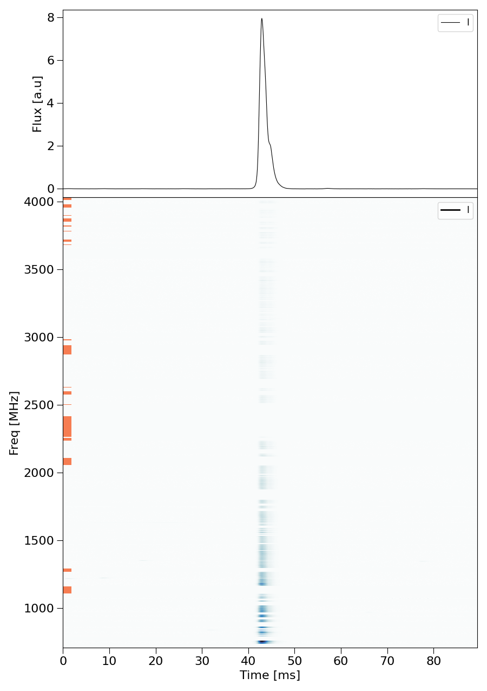
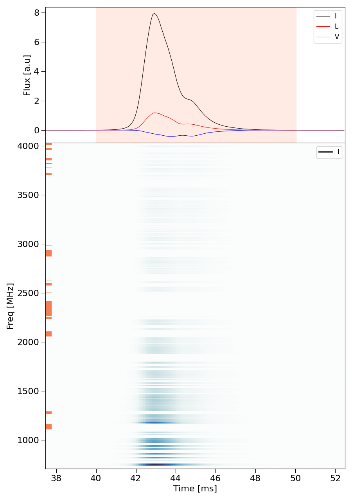
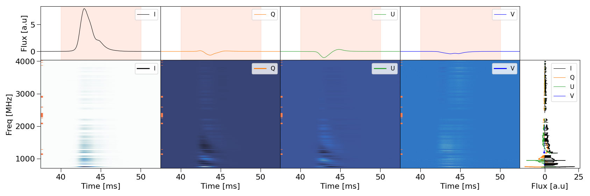
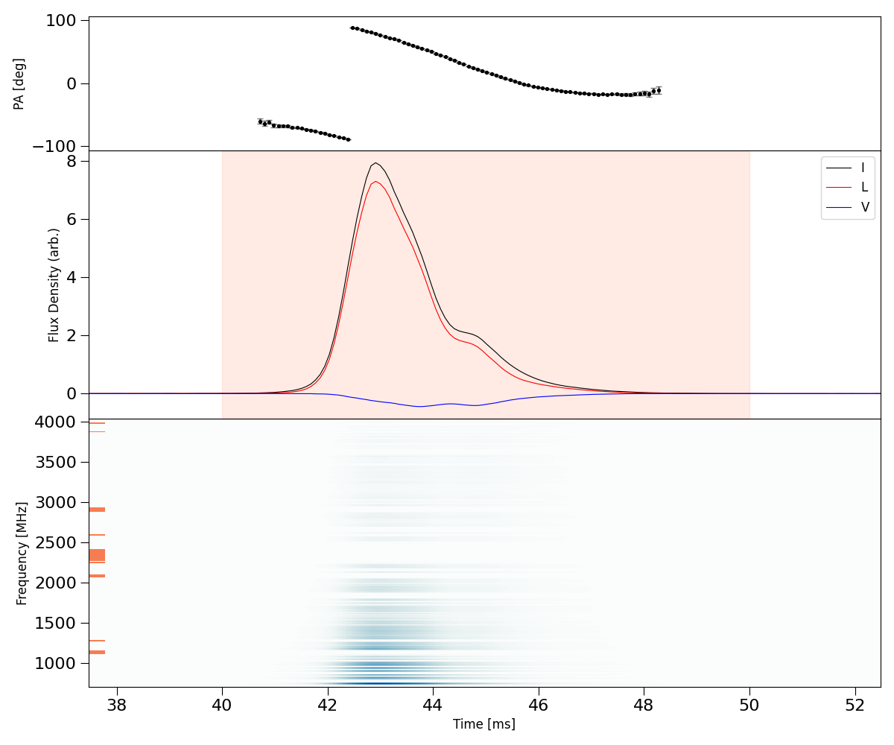
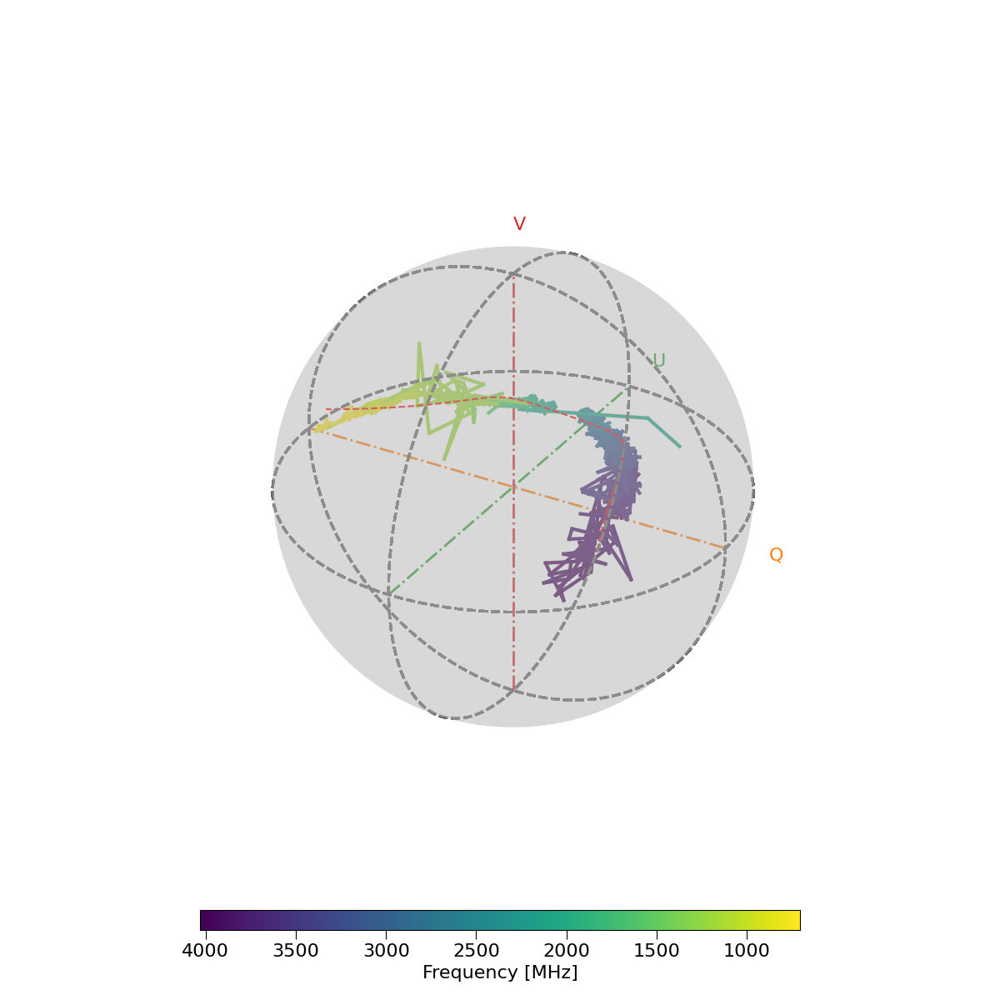
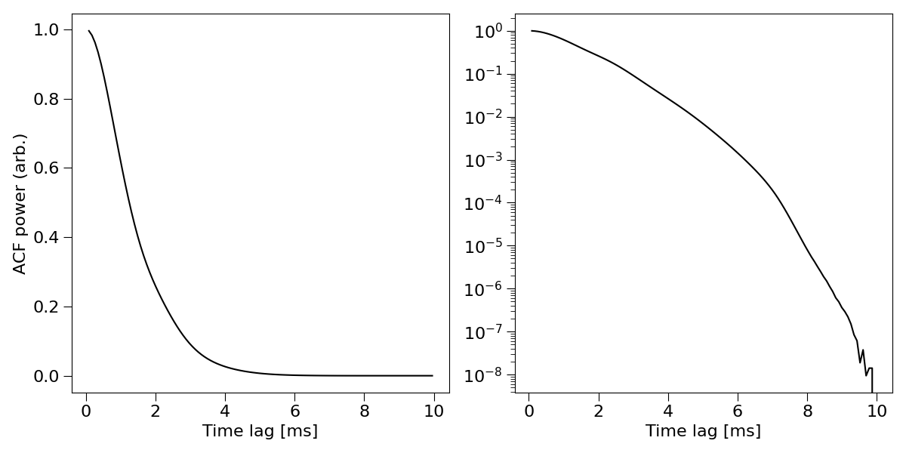
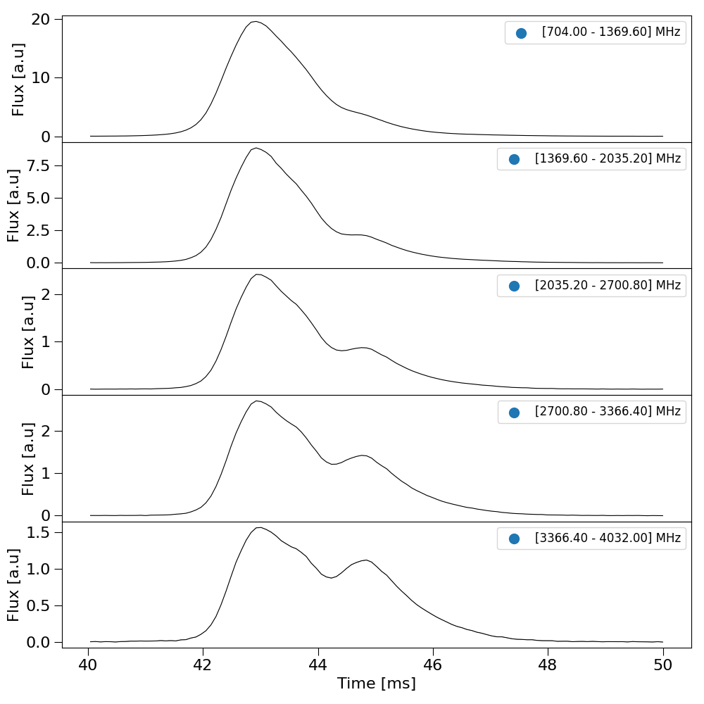

Tutorial 2: Plotting functions
The following is a list of plotting functions that can be used to analyse FRB data. To show an interactive figure set show_plots = True using frb.set() or setting
it as an argument in any of the plotting methods. To save a .png of the figure set save_plots = True.
FRB.plot_data()
The FRB.plot_data() method is the most generic plotting method in ILEX but also the most versatile by allowing the user
to plot any combination of Stokes data products at once.
Lets start by plotting the Stokes total intensity data (I).
from ilex.frb import FRB
frb = FRB("./examples/VELA240621.yaml")
frb.plot_data()
{kind=link}

We can specify the type of products to plot using the data argument. Lets plot the total intensity dynspec and Stokes
I, L and V time series profiles. First we will set t_crop = [40.0, 50.0]. We will also change the amount of padding
added to the time crop when plotting the data, i.e. plot_tpad = 5.0.
frb.set(t_crop = [40.0, 50.0])
frb.plot_data(data = ['tILV', 'dsI'])
{kind=link}

In the above figure the red highlighted region denotes the time crop t_crop.
We can change the layout of the plots in case multiple dynamic spectra are ploted. For example
frb.plot_data(data = ['tIQUV', 'dsIQUV', 'fIQUV'], layout = "horizontal")
{kind=link}

the layout = horizontal argument will plot the dynamic spectra along the horizontal direction. The frequency data products, i.e. fIQUV,
will be placed on a single axes on the far right. If layout = vertical then the time data products will be placed on a single axes on top.
You can also plot stokes fractions! Set stk_ratio = True to enable this, which requires specifying the off-pulse time crop terr_crop.

In the code snippet above, stk_sigma = 3.0 will mask any samples with a S/N < 3.0 (signal-to-noise).
FRB.plot_PA()
This method is used to plot the polarisation position angle profile along with stokes data and the total intensity dynamic spectrum. We will need to set
the Rotation Measure RM = 39.0, which is the rough estimated value for Vela.
frb.set(RM = 39.0)
frb.plot_PA(Ldebias_threshold = 3.0, stk2plot = "ILV")
{kind=link}

FRB.plot_poincare()
We can plot the Stokes parameters on the poincare sphere.
frb.plot_poincare(plot_model = True)
{kind=link}

The red dashed line shows a polynomial fit of teh poincare track which we enabled using the argument plot_model = True.
FRB.plot_periodgram()
We can plot the periodgram of the total intensity time series (I).
frb.plot_periodgram(plot_log = True)
{kind=link}

FRB.plot_subbands()
We can plot Stokes data across multiple subbands.
frb.plot_subbands(N = 5, stk = "I")
{kind=link}

Additional plotting methods
FRB.plot_crop(): Plots the bounds of the on-pulse and off-pulse crops, useful for diagnostics.FRB.plot_stokes(): Depreciated method to plot stokes time/frequency data.FRB.plot_data_on_axes(): Method to plot individual Stokes products on a provided axes.